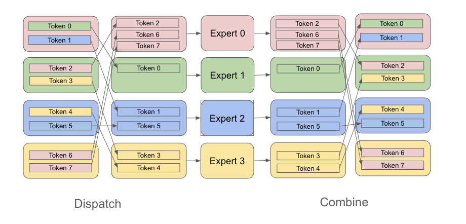

How do Mixture of Experts Layers Work? Part 2¶
Introduction¶
In Part 1, we introduced the Mixtures of Experts layer and attempted a naive implementation, where we trained a simple neural network with an expert router and two experts. The model learned to route each datapoint to one of two regression models. We used a synthetic dataset tailored for our model.
In this post, we’ll build upon that basic design and explore how to scale MoE layers across multiple GPUs.
Why Mixture of Experts?¶
The main reason that Mixture of Experts is used is because it can scale model parameters with sublinear compute scaling. In a dense model, every parameter is used for every input. Double the parameters, double the FLOPs. MoE breaks this relationship by only activating a subset of parameters for each input. In modern MoE models, each token is routed to K of N experts (typically K = 1 or 2). This means per-token FLOPs in the expert layers are reduced to K/N of what a dense network would require, without a large performance penalty.
As a result, we can train much larger models while keeping the compute budget under control.
The Parallelism Challenge¶
The parallelism challenge in MoE is about what happens when we try to distribute experts across multiple GPUs. In our naive implementation, we ran every token through every expert and then weighted the outputs. This is actually dense computation masquerading as MoE.
To get actual sparse computation, we need to only send each token to its assigned K experts. But when experts live on different GPUs, this creates a coordination problem. Token A on GPU 0 might need Expert 2 on GPU 2. Token B on GPU 1 might need Expert 0 on GPU 0. Every GPU potentially needs to send tokens to every other GPU, creating a many-to-many communication pattern.
This introduces several challenges. First, all-to-all communication is expensive. Second, if the router sends many tokens to one expert, that GPU becomes a bottleneck while others sit idle. Third, each GPU needs memory to buffer incoming and outgoing tokens during the shuffle. Finally, we need two shuffles, one to dispatch tokens to experts, and another to combine results back to their original positions.
Expert Parallelism Explained¶
Expert parallelism solves the routing problem by distributing experts across GPUs and using all-to-all communication to shuffle tokens to their assigned experts. The sharding strategy has three components: expert weights are sharded on the expert dimension so that GPU i holds expert i, non-expert layers (attention, embeddings, normalization) are replicated across all GPUs, and data batches are sharded on the batch dimension so that GPU i processes batch slice i. This combines data parallelism with expert parallelism.
MoE Sharding Strategy

Token Routing - Dispatch and Combine¶
The token flow works in four phases: First, each GPU gathers its tokens into expert-specific buffers. After this local gathering step, each GPU has organized its tokens which expert they are assigned. Second, during the all-to-all dispatch, the expert buffers are redistributed across GPUs so that each expert’s tokens are collected on their respective GPU. GPU 0 receives all tokens destined for expert 0, GPU 1 receives all tokens for expert 1, and so on. Third, each GPU runs its local expert on the tokens it received. Fourth, during the all-to-all combine, the processed tokens are routed back to their original GPUs and reassembled in the correct sequence positions.

In JAX, the all-to-all communication emerges implicitly from sharding constraints. We specify how tensors should be partitioned (e.g., tokens sharded by batch, expert weights sharded by expert index), and XLA’s compiler inserts the necessary collectives when an operation requires data that lives on another device. For MoE, this means the dispatch and combine shuffles happen automatically when the sharding layout changes between “tokens grouped by batch” and “tokens grouped by expert.”
The dispatch and combine phases come with real costs. MoE trades compute savings (activating only K of N experts) for communication overhead. Each token must be sent to its assigned expert and the result returned, roughly 2 × num_tokens × hidden_dim bytes moved per MoE layer. All-to-all is also a synchronization barrier: every GPU must wait for the slowest one to finish sending and receiving, so load imbalance amplifies latency. Finally, each GPU needs buffer memory to stage outgoing tokens (grouped by destination) and incoming tokens (from all other GPUs), increasing peak memory usage beyond what the expert weights alone require.
Capacity Factor, Token Dropping and Load Balancing¶
The router doesn’t distribute tokens evenly; one expert might receive 80% of tokens while another gets 5%. To handle this, MoE implementations define an expert capacity: capacity = (batch_tokens / num_experts) × capacity_factor, where capacity factor (typically 1.0 to 2.0) controls how much slack each expert has. When more tokens are routed to an expert than its capacity allows, the excess tokens are dropped.
The capacity factor controls a tradeoff: higher values mean fewer dropped tokens but more buffer memory and wasted compute on padding; lower values keep memory tight but risk dropping tokens. To minimize dropping without inflating capacity, MoE models use auxiliary load balancing losses that penalize uneven routing, pushing the router toward balanced assignments.
Putting It Together: A Sparse MoE Layer¶
The implementation below demonstrates sparse token routing without sharding. The Experts class holds all expert weights in a single tensor of shape (n_experts, n_embed, n_embed), indexing into the appropriate slice when called. The MOE class implements the full dispatch-compute-combine pattern: a router produces per-token logits, jax.lax.top_k selects the top-k experts for each token, and a masked softmax computes the expert weights. Each expert then processes only its gathered tokens.
Setup and Imports¶
First, we set up the environment and import all necessary libraries. Since we’re training on a CPU, we can emulate multiple devices by setting some environment variables for the XLA compiler.
import os
os.environ["XLA_FLAGS"] = '--xla_force_host_platform_device_count=2'
from dataclasses import dataclass
import jax
import jax.numpy as jnp
from jax.sharding import Mesh, PartitionSpec, NamedSharding
import flax.nnx as nnx
import optax
Device Mesh and Sharding Configuration¶
Here we create a device mesh and sharding specifications that will be used throughout the MoE implementation. Device mesh is a logical arrangement of devices along at least one axis. We’ll use a single axis and shard both our data and our experts along this axis. The other model weights will be replicated.
# Set up device mesh - all devices along a single "devices" axis
print(f"Devices: {jax.devices()}")
mesh = Mesh(jax.devices(), ["devices"])
print(mesh)
num_devices = len(jax.devices())
# Sharding spec for expert-parallel tensors
expert_spec = PartitionSpec("devices",)
Devices: [CpuDevice(id=0), CpuDevice(id=1)]
Mesh('devices': 2, axis_types=(Auto,))
Model Configuration¶
The configuration defines all hyperparameters for our Mixture of Experts toy model. Key parameters:
n_experts: Number of experts
top_k: Number of experts each token can be routed to
load_factor: Controls buffer size for expert capacity
load_balancing_loss_coeff: Coefficient for the load-balancing loss
@dataclass(unsafe_hash=True)
class Config():
name: str = "MoE"
dtype: jnp.dtype = jnp.float32
param_dtype: jnp.dtype = jnp.float32
top_k = 2
load_factor = 1.10
load_balancing_loss_coeff = 0.01
n_experts = 2
n_embed = 3
n_mlp_hidden = 6
mlp_bias = True
dtype = jax.numpy.float32
config = Config()
MoE Layer with Router and Load Balancing Loss¶
The MOE class combines routing and expert computation. First, a linear layer (the router) predicts which experts should process each token. This is executed for every sharded batch independently. Then, the top-k experts are picked for each token along with the corresponding expert weights. The dispatch operation then performs and all-to-all and gathers each expert’s tokens. Once each expert processes its respective set of tokens, they are scattered back to their original positions.
The load balancing loss is computed as the coefficient of variation between two distributions:
frac_tokens: The actual fraction of tokens sent to each expert
frac_router_probs: The average router probabilities assigned to each expert
The loss encourages these two distributions to match:
load_balance_loss = sum(frac_tokens * frac_router_probs) * n_experts
This prevents any single expert from becoming a bottleneck and ensures all experts receive meaningful training signals. The coefficient load_balance_loss_coeff controls how strongly we penalize imbalance.
class MOE(nnx.Module):
def __init__(self, config: Config, rngs: nnx.Rngs):
# Router is replicated
self.router_gate = nnx.Linear(
config.n_embed,
config.n_experts,
kernel_init=nnx.initializers.normal(stddev=0.02),
bias_init=nnx.initializers.zeros,
use_bias=config.mlp_bias,
dtype=config.dtype,
rngs=rngs,
)
self.experts = Experts(config, rngs)
self.top_k = config.top_k
self.n_experts = config.n_experts
self.load_factor = config.load_factor
self.add_noise = False
self.load_balance_loss = False
self.rngs = rngs
def __call__(self, x):
B, T, C = x.shape
x_flat = x.reshape(-1, C)
# Router produces expert logits for each token
logits = self.router_gate(x_flat) # (B*T, n_experts)
# Select top-k experts per token
top_k_logits, expert_indices = jax.lax.top_k(logits, self.top_k)
# Create sparse logits for softmax (only top-k positions have real values)
zeros = jnp.full_like(logits, float('-inf'))
sparse_logits = jnp.put_along_axis(
zeros, expert_indices, top_k_logits, axis=-1, inplace=False
)
expert_weights = jax.nn.softmax(sparse_logits, axis=-1)
# Gather tokens into expert buffers
expert_capacity = int(self.load_factor * self.top_k * B * T // self.n_experts)
expert_inputs = jnp.zeros((self.n_experts, expert_capacity, C))
input_counters = jnp.zeros((self.n_experts,), dtype=jnp.int32)
def update_expert_inputs(i, carry):
expert_inputs, counters = carry
for j in range(self.top_k):
expert_idx = expert_indices[i, j]
token_pos = counters[expert_idx]
expert_inputs = expert_inputs.at[expert_idx, token_pos].set(x_flat[i])
counters = counters.at[expert_idx].add(1)
return expert_inputs, counters
expert_inputs, input_counters = jax.lax.fori_loop(
0, B * T, update_expert_inputs, (expert_inputs, input_counters)
)
# Apply sharding constraint to trigger all-to-all dispatch
# This moves tokens from batch-sharded to expert-sharded layout
expert_inputs = jax.lax.with_sharding_constraint(expert_inputs, expert_spec)
# #ach expert processes its tokens
expert_outputs = self.experts(expert_inputs)
# Scatter results back to original positions
output_counters = jnp.zeros((self.n_experts,), dtype=jnp.int32)
y_pred = jnp.zeros_like(x_flat)
def update_expert_outputs(i, carry):
y_pred, output_counters = carry
for j in range(self.top_k):
expert_idx = expert_indices[i, j]
token_pos = output_counters[expert_idx]
y_pred = y_pred.at[i].add(
expert_outputs[expert_idx, token_pos] * expert_weights[i, expert_idx]
)
output_counters = output_counters.at[expert_idx].add(1)
return y_pred, output_counters
y_pred, output_counters = jax.lax.fori_loop(
0, B * T, update_expert_outputs, (y_pred, output_counters)
)
# Apply sharding constraint to trigger all-to-all combine
# This moves results from expert-sharded back to batch-sharded layout
y_pred = jax.lax.with_sharding_constraint(y_pred, expert_spec)
y_pred = y_pred.reshape(B, T, C)
# Calculate load balancing loss
# Calculate fraction of tokens assigned to each expert
frac_tokens = jnp.bincount(expert_indices.flatten(), length=self.n_experts) / (B * T * self.top_k)
# Calculate fraction of router probabilities assigned to each expert
frac_router_probs = jnp.sum(expert_weights, axis=(0, 1)) / (B * T)
# Load balancing loss encourages equal token distribution across experts
load_balance_loss = jnp.sum(frac_tokens * frac_router_probs) * self.n_experts
return y_pred, load_balance_loss
Training Setup¶
Now we set up the trainer. Since this is a regression task, we used an MSE loss with Adam as the optimizer. The synthetic data creates a clear routing signal: positive inputs go to expert 0, negative inputs go to expert 1. This tests whether the MoE learns to route correctly.
def loss_fn(model, x, y):
y_pred, load_balance_loss = model(x)
loss = jnp.mean((y - y_pred)**2)
loss += config.load_balancing_loss_coeff * load_balance_loss
return loss
@nnx.jit
def step(state, model, x, y):
total_loss, grads = nnx.value_and_grad(loss_fn)(model, x, y)
state.update(model, grads)
return total_loss
D, B, T, C = 1000, config.n_experts, 5, config.n_embed
default = jax.random.key(42)
rngs = nnx.Rngs(default=default)
Model Creation¶
Next, we create the sharded model. The expert weights need to be sharded along the experts axis while the gate weights need to be replicated.
# Create model within mesh context for proper sharding
@nnx.jit(static_argnums=(0, 1))
def create_sharded_model(Model, config, rngs):
model = Model(config=config, rngs=rngs)
state = nnx.state(model)
pspecs = nnx.get_partition_spec(state)
sharded_state = nnx.with_sharding_constraint(state, pspecs)
nnx.update(model, sharded_state)
return model
with mesh:
model = create_sharded_model(MOE, config, rngs)
model.train()
tx = optax.adam(1e-2)
state = nnx.Optimizer(model, tx, wrt=nnx.Param)
print("Expert Layer Sharding:")
print(model.experts.w1.value.sharding.spec)
print(model.experts.w1.value.sharding)
print("Router Sharding:")
print(model.router_gate.kernel.value.sharding.spec)
print(model.router_gate.kernel.value.sharding)
Expert Layer Sharding:
PartitionSpec('devices',)
NamedSharding(mesh=Mesh('devices': 2, axis_types=(Auto,)), spec=PartitionSpec('devices',), memory_kind=unpinned_host)
Router Sharding:
PartitionSpec()
NamedSharding(mesh=Mesh('devices': 2, axis_types=(Auto,)), spec=PartitionSpec(), memory_kind=unpinned_host)
Dataset Generation¶
We create a synthetic dataset where each sample has shape (B, T, C) representing a batch of sequences with C-dimensional embeddings. The target transformation depends on the sign of the first feature dimension.
x = jax.random.normal(jax.random.key(1000), (D, B, T, C))
expert_ids = (x[:, :, :, 0] > 0).astype(jnp.int32)[..., None]
t = [
jax.random.normal(jax.random.key(2000), (C, C)),
jax.random.normal(jax.random.key(3000), (C, C)),
]
def transform(xi, eid):
return jnp.where(eid == 1, xi @ t[0], xi @ t[1])
y = jax.vmap(lambda xi, ei: transform(xi, ei))(x, expert_ids)
# Training indices
indices = list(range(D))
Training¶
Finally, let’s overfit the model on our toy dataset.
# Training loop
with mesh:
# Create data sharding for batch dimension
data_sharding = NamedSharding(mesh, PartitionSpec("devices",))
for e in range(10):
for i in indices:
# Shard data across devices
x_batch = jax.device_put(x[i], data_sharding)
y_batch = jax.device_put(y[i], data_sharding)
loss = step(state, model, x_batch, y_batch)
if i == indices[0]:
print(f"Epoch: {e}, Loss: {loss:0.4f}")
Epoch: 0, Loss: 2.7845
Epoch: 1, Loss: 0.0999
Epoch: 2, Loss: 0.0780
Epoch: 3, Loss: 0.0624
Epoch: 4, Loss: 0.0505
Epoch: 5, Loss: 0.0419
Epoch: 6, Loss: 0.0361
Epoch: 7, Loss: 0.0325
Epoch: 8, Loss: 0.0303
Epoch: 9, Loss: 0.0290
The model was able to successfully overfit on our dataset.
This basic design can be used to create and train much larger models. I trained a large scale transformer model with 30 layers and around 400mm paramters on 8GPUs here. We will cover that in our next post on this topic.
References¶
Jacobs, R. A., Jordan, M. I., Nowlan, S. J., & Hinton, G. E. (1991). Adaptive Mixtures of Local Experts. Neural Computation.
Shazeer, N., Mirhoseini, A., Maziarz, K., Davis, A., Le, Q., Hinton, G., & Dean, J. (2017). Outrageously Large Neural Networks: The Sparsely-Gated Mixture-of-Experts Layer. ICLR.
Lepikhin, D., Lee, H., Xu, Y., Chen, D., Firat, O., Huang, Y., … & Chen, Z. (2021). GShard: Scaling Giant Models with Conditional Computation and Automatic Sharding. ICLR.
Fedus, W., Zoph, B., & Shazeer, N. (2022). Switch Transformers: Scaling to Trillion Parameter Models with Simple and Efficient Sparsity. JMLR.
Du, N., Huang, Y., Dai, A. M., Tong, S., Lepikhin, D., Xu, Y., … & Le, Q. V. (2022). GLaM: Efficient Scaling of Language Models with Mixture-of-Experts. ICML.
Riquelme, C., Puigcerver, J., Mustafa, B., Neumann, M., Jenatton, R., Susano Pinto, A., … & Houlsby, N. (2021). Scaling Vision with Sparse Mixture of Experts. NeurIPS.
Jiang, A. Q., Sablayrolles, A., Roux, A., Mensch, A., Savary, B., Bamford, C., … & Sayed, W. E. (2024). Mixtral of Experts. arXiv.